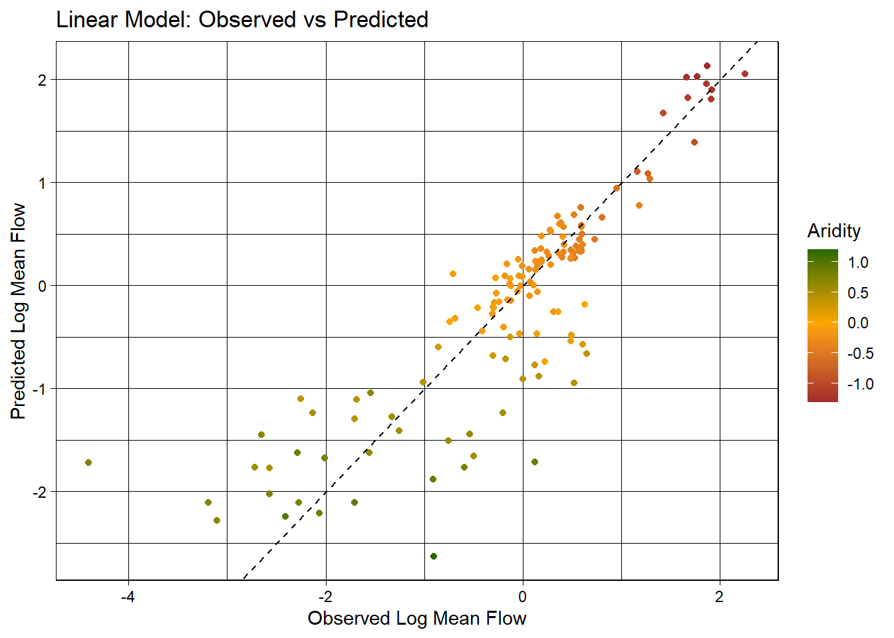
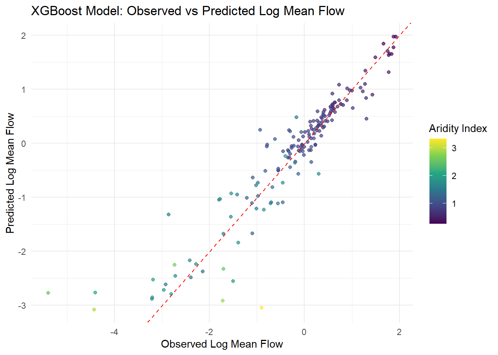

# Create a scatter plot of aridity vs rainfallggplot(camels, aes(x = aridity, y = p_mean)) +# Add points colored by mean flowgeom_point(aes(color = q_mean)) +# Add a linear regression linegeom_smooth(method ="lm", color ="red", linetype =2) +# Apply the viridis color scalescale_color_viridis_c() +# Add a title, axis labels, and theme (w/ legend on the bottom)theme_linedraw() +theme(legend.position ="bottom") +labs(title ="Aridity vs Rainfall vs Runnoff", x ="Aridity", y ="Rainfall",color ="Mean Flow")
`geom_smooth()` using formula = 'y ~ x'
ggplot(camels, aes(x = aridity, y = p_mean)) +geom_point(aes(color = q_mean)) +geom_smooth(method ="lm") +scale_color_viridis_c() +# Apply log transformations to the x and y axesscale_x_log10() +scale_y_log10() +theme_linedraw() +theme(legend.position ="bottom") +labs(title ="Aridity vs Rainfall vs Runnoff", x ="Aridity", y ="Rainfall",color ="Mean Flow")
`geom_smooth()` using formula = 'y ~ x'
ggplot(camels, aes(x = aridity, y = p_mean)) +geom_point(aes(color = q_mean)) +geom_smooth(method ="lm") +# Apply a log transformation to the color scalescale_color_viridis_c(trans ="log") +scale_x_log10() +scale_y_log10() +theme_linedraw() +theme(legend.position ="bottom",# Expand the legend width ...legend.key.width =unit(2.5, "cm"),legend.key.height =unit(.5, "cm")) +labs(title ="Aridity vs Rainfall vs Runnoff", x ="Aridity", y ="Rainfall",color ="Mean Flow")
`geom_smooth()` using formula = 'y ~ x'
set.seed(123)# Bad form to perform simple transformations on the outcome variable within a # recipe. So, we'll do it here.camels <- camels |>mutate(logQmean =log(q_mean))# Generate the splitcamels_split <-initial_split(camels, prop =0.8)camels_train <-training(camels_split)camels_test <-testing(camels_split)camels_cv <-vfold_cv(camels_train, v =10)
# Create a recipe to preprocess the datarec <-recipe(logQmean ~ aridity + p_mean, data = camels_train) %>%# Log transform the predictor variables (aridity and p_mean)step_log(all_predictors()) %>%# Add an interaction term between aridity and p_meanstep_interact(terms =~ aridity:p_mean) |># Drop any rows with missing values in the predstep_naomit(all_predictors(), all_outcomes())
# Prepare the databaked_data <-prep(rec, camels_train) |>bake(new_data =NULL)# Interaction with lm# Base lm sets interaction terms with the * symbollm_base <-lm(logQmean ~ aridity * p_mean, data = baked_data)summary(lm_base)
Call:
lm(formula = logQmean ~ aridity * p_mean, data = baked_data)
Residuals:
Min 1Q Median 3Q Max
-2.91162 -0.21601 -0.00716 0.21230 2.85706
Coefficients:
Estimate Std. Error t value Pr(>|t|)
(Intercept) -1.77586 0.16365 -10.852 < 2e-16 ***
aridity -0.88397 0.16145 -5.475 6.75e-08 ***
p_mean 1.48438 0.15511 9.570 < 2e-16 ***
aridity:p_mean 0.10484 0.07198 1.457 0.146
---
Signif. codes: 0 '***' 0.001 '**' 0.01 '*' 0.05 '.' 0.1 ' ' 1
Residual standard error: 0.5696 on 531 degrees of freedom
Multiple R-squared: 0.7697, Adjusted R-squared: 0.7684
F-statistic: 591.6 on 3 and 531 DF, p-value: < 2.2e-16
metrics(test_data, truth = logQmean, estimate = lm_pred)
# A tibble: 3 × 3
.metric .estimator .estimate
<chr> <chr> <dbl>
1 rmse standard 0.583
2 rsq standard 0.742
3 mae standard 0.390
ggplot(test_data, aes(x = logQmean, y = lm_pred, colour = aridity)) +# Apply a gradient color scalescale_color_gradient2(low ="brown", mid ="orange", high ="darkgreen") +geom_point() +geom_abline(linetype =2) +theme_linedraw() +labs(title ="Linear Model: Observed vs Predicted",x ="Observed Log Mean Flow",y ="Predicted Log Mean Flow",color ="Aridity")

# Define modellm_model <-linear_reg() %>%# define the engineset_engine("lm") %>%# define the modeset_mode("regression")# Instantiate a workflow ...lm_wf <-workflow() %>%# Add the recipeadd_recipe(rec) %>%# Add the modeladd_model(lm_model) %>%# Fit the model to the training datafit(data = camels_train) # Extract the model coefficients from the workflowsummary(extract_fit_engine(lm_wf))$coefficients
ggplot(xgb_test, aes(x = logQmean, y = .pred, color = aridity)) +geom_point(alpha =0.7) +geom_abline(linetype ="dashed", color ="red") +scale_color_viridis_c() +theme_minimal() +labs(title ="XGBoost Model: Observed vs Predicted Log Mean Flow",x ="Observed Log Mean Flow",y ="Predicted Log Mean Flow",color ="Aridity Index" )
Warning: Removed 1 row containing missing values or values outside the scale range
(`geom_point()`).

Based on cross-validation and test set evaluation, the XGBoost model performed best with R² > 0.92, suggesting strong predictive accuracy. The combination of climate (precipitation, PET, aridity), terrain (slope, elevation), and basin area successfully captured streamflow patterns.
I would move forward with the XGBoost model for its balance of performance, flexibility, and ability to model complex, non-linear relationships in hydrologic systems.